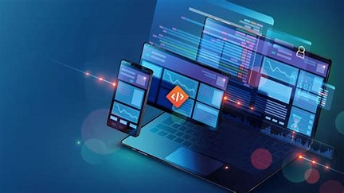

Course Overview
Frontend development focuses on creating the visual and interactive aspects of websites and web applications. As a frontend developer, you'll craft user-friendly interfaces using technologies like HTML, CSS, and JavaScript, ensuring seamless user experiences across devices.
Skills & Technologies
HTML5
Structure web content effectively, ensuring semantic and accessible layouts.
CSS3
Style and layout web pages with precision, creating responsive designs.
JavaScript
Add interactivity and dynamic behavior to web pages.
React.js
Build reusable UI components and manage application state efficiently.
Version Control (Git)
Track changes and collaborate effectively with teams.
Responsive Design
Ensure websites look and function well on all devices.

Learning Roadmap
- Weeks 1-2: Learn HTML5 and CSS3 fundamentals.
- Weeks 3-4: Master JavaScript basics and DOM manipulation.
- Weeks 5-6: Dive into React.js and build dynamic components.
- Weeks 7-8: Understand version control with Git and collaborate on projects.
- Weeks 9-10: Implement responsive designs and optimize for performance.
- Weeks 11-12: Build a portfolio project showcasing your skills.
Career Opportunities
Infosys
Offers roles in web development with a focus on frontend technologies.
TCS
Provides opportunities in UI/UX development and design.
Accenture
Engages in diverse projects requiring frontend expertise.
Wipro
Seeks frontend developers for various client projects.
HCL Technologies
Offers positions in web application development.
Capgemini
Provides roles in frontend development across industries.
Salary Expectations in India
- Entry-Level (0-2 years): ₹3,00,000 - ₹5,00,000 per annum
- Mid-Level (2-5 years): ₹6,00,000 - ₹12,00,000 per annum
- Senior-Level (5+ years): ₹12,00,000 - ₹20,00,000+ per annum
Note: Salaries vary based on skills, experience, and location.
Where to Learn & Reference Links
To become a proficient Frontend Developer, consider learning from these trusted online platforms and tutorials. They offer comprehensive courses, projects, and hands-on experience to build your skills from scratch to advanced levels.